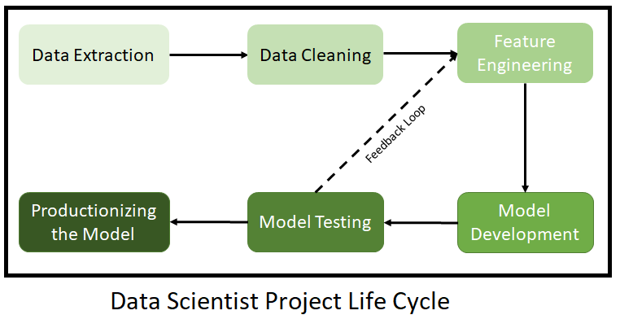

Motivation:
This is my first post documenting my journey to become a machine learning engineer/data scientist. The idea was stumbled during my job search, when I confused “Data Scientist” and “Machine Learning Engineer” (and “Data Analyst” and “Data Engineer”, to a lesser extent) together. The post was created so that nobody having read it in the near future got confused again.
The post will be straight to the point, because I want to save our time. Now, some head-up:
Machine Learning (ML), Artificical Intelligence (AI), Data Science (DS):
AI is the catch-all phrase to describe techniques that make machines display “intelligence” similar to humans in some sense. The most famous example is the ability to recognize a cat in the picture. ML is a part of AI, sepcifically a goal of “leveraging data to improve performance of machine”. Side note: Deep learning (DL) is an approach in AI. One good way to think about ML: whatever model, it is trying to fit a function to the data at hand. DL tries to accomplish this with neural network, which was proved to be able to simulate any continuous function (with enough network size and data) and to have stellar results.
DS is the science of extracting insights from data. Simply put, it is statistics paired with human expertise. One example is sabermetrics, and if you want some entertainment, try Moneyball. ML techniques, because of their usefulness, have found their way into DS with success, to put it mildly.
The emphasis is on data. All the shiny models will cease to exist without data. So whatever you want, being able to work with data is expected.
Now let’s look at some internships from TikTok on LinkedIn, the company I am eyeing at. These job posts have high requirements for candidates and should be a good ceiling.
The easily distinguished jobs:
Data Analyst:
%20data%20analyst%20intern%20Jobs%20LinkedIn.png)
Here is a diagram from DataCamp that sums up the job descriptions well:

I will analyze the job descriptions from the angle of someone seeking employment as soon as possible, and that is the meaning of “for our purpose” below. From the job descriptions, you will need to know…
Basic:
- …how to use a business intelligence platforms - Looker, Power BI, Tableau and the like. The platform allows you to achieve step 2-4 in the above diagram. Take Power BI. You can prepare and transform data; you can explore data from basic (mean, median, etc.) to complex operations that you define yourself; you can do all kinds of visualizations; you can publish the findings to a report, an app (possibly dashboard), or slides to aid your presentation (more on that below). The most effective way to learn the tool for our purpose is through projects and just-in-time learning. You can find resources on this elsewhere so I will stop here.
- …how to communicate (written and oral). After analyzing the data, of course you will need to present insights to “stakeholders” and your superiors. Because
nobody likes meetingtime is precious, “concise” and “easy to understand” are good traits to have. For our purpose, the most impressive will be writing a documentation for an open-source project that we start or contribute significantly (enough that leads to change in documentation). A lesser one is keeping a blog that you write daily.
Preferred: These are specific TikTok’s preferences:
- …how to do statistical analysis. This is arguably “basic”, not “preferred”. The numbers you calculate in the platform, they all have statistical meanings, so it helps to know what you are calculating. In short, statistics is fundamental, so learn it well from the resource you prefer. (You can now find a playlist of entire university course or free textbook online).
- …how to use API. A business intelligence platform can do all things, except generating initial data - you will need to load them in yourself. For TikTok, the data seem to be stored in a cloud database, so you will need to use API to pull them down. The best way to learn is through experimenting. For me, I used API to . Side note: API is often used with a programming language, so you should learn some basic syntax for one. Python is a good choice for beginner.
- …how to use Hadoop-related technology. Apache Hadoop is an open-source framework specialized in handling big data, especially in batch. Hadoop Distributed File System (HDFS), as the name suggests, help you work with data that are distributed across different databases. A company using Hadoop suggests a large volume of data (and facilities to store them), which is certainly the case at TikTok - just imagine how many reels are uploaded per day. And this is a company-specific preference: not all companies have data so big that Hadoop is required. But if you think that knowing Hadoop is beneficial in this age of big data, you can learn it. Make sure to focus on your job - data extraction, data preparation, etc.
Data Engineer:
As a LinkedIn post suggested, a data engineer’s job is “being in charge of the data pipeline”, making sure that people such as data scientists can have the data to do their jobs. I will admit that I know next to nothing about data engineer, so the following came from a certain “God-tier” roadmap that I picked up. (I am weak again anything “God-tier”, so please refrain from using that against me). I will guess that the job requirements will vary. The data you need to work on may just be stored in a single AWS S3, but there are cases where the data are distributed in 23 data centers around the world, and you need Vitess on top of MySQL to handle the requests successfully (totally not Youtube). In any case, a quick rundown of the “God-tier” roadmap reviews that you need:
- SQL (and NoSQL)
- Database system knowledge (data lake, data warehouse, etc.)
- Linux a.k.a working with command line interface (CLI)
- Big data framework (Hadoop, Spark, Kafka, depends on your company)
- Cloud service knowledge (Google Cloud Product (GCP), Amazon Web Services (AWS), or Microsoft Azure - depends on your company)
- Containerization technology: Docker (and Kubernetes)
You may find the rest in the video and the attached document. Now onto the confusing topic…
Data Scientist/Machine Learning Engineer:
First, let’s start with a diagram from DataCamp.
The things that confuse me